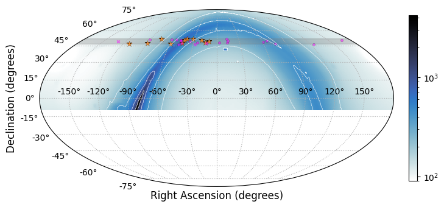
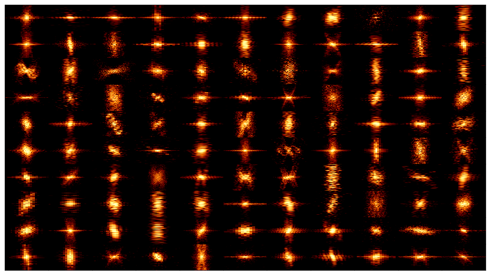

Research
A full publication list can be found here, and a condensed list here
A PDF link of my CV
CHAMPSS
The 'CHIME All-Sky Multiday Stack Search' is a daily, full-sky search for pulsars, piggybacking the CHIME/FRB datastream. Most pulsar searches to date used traditional radio dishes, tiling the sky once, or focussing on regions were pulsars are expected to live a priori. Due to the half-pipe nature of CHIME, we will see the whole northern sky daily, allowing us to detect transient pulsars, as well as fainter pulsars through stacking.
After leading a massive hardware upgrade at the CHIME-site, the search will scale up in late 2024 to early 2025. A pilot survey has discovered the first 11 pulsars so far, with many more to come!
Page with our up-to-date pulsar discoveries
 Pointing map for CHAMPSS, the colourbar represents the total electron column of the Milky Way, and thus how 'deep' our search must observe. The horizontal strip shows our pilot survey, with all pulsars discovered (new discoveries in orange).
Scintillometry
Scintillation Arcs are a powerful tool to probe the ionized interstellar medium on tiny scales. They reveal scattering dominated from thin, sometimes highly anisotropic regions. The arc curvature contains the relative motion of the pulsar, earth, and the screen. Annual variations, or VLBI can be used to map and locate these screens in the IISM. Knowing the screen geometry, the scintillation pattern serves as a ~10AU interferometer with which one can study the pulsar, used to study pulsar orbits and to probe pulsar magnetospheres.
 Panorama of scintillation arcs seen with the TPA, from [@main+23a]. Each panel is a 'delay' vs 'Doppler' map of scattered images towards a pulsar, which can be used to map the scattering screen on <mas scales.
Plasma Lensing in Eclipsing Binaries
A class of pulsars called 'spiders', the pulsar is irradiating a low-mass companion, driving an ionized wind. Often, pulsed emission is fully eclipsed for a large part of its orbit, absorbed or obscured by the wind. In the edges of the eclipse, the pulsed emission can still be seen, but is delayed and scattered. This variable ionized wind acts as a lens, which can amplify pulse signals by orders of magnitude, and even resolve pulse components. These systems also serve as laboratories for extreme propagation effects, as we have a clean reference when the pulse is far from eclipse
 Radio emission surrounding the eclipse of the `black widow' pulsar B1957+20, where colour is mapped to the radio frequency. Surrounding the eclipse, the effects of dispersion and scattering can be seen through the chromatic delays, while the light flickers due to the lensing from the same material.
Radio emission surrounding the eclipse of the `black widow' pulsar B1957+20, where colour is mapped to the radio frequency. Surrounding the eclipse, the effects of dispersion and scattering can be seen through the chromatic delays, while the light flickers due to the lensing from the same material.